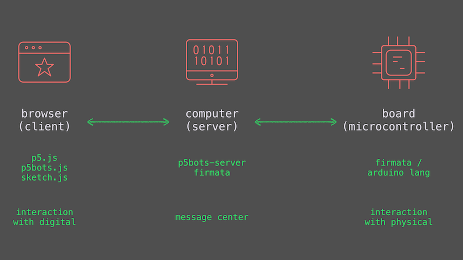

Welcome to p5bots!
How Does This Work?
p5bots is a library that works to send messages from your browser, where you are running p5.js, to your microcontroller, most likely an Arduino. To do this, it uses thesocket.io library and node.js to send messages between the two devices, in a language each device can understand.
This way, you can click on a sketch to light an LED or use temperature data to drive a sketch — or more.

p5bots comprises two sets of files: the client file, called p5bots.js, which is included in the index.html along with p5.js and your sketch; and the server files, called p5bots-server, which can be downloaded from npm.
If all this sounds a little too manual, you can also use p5bots from the p5.js IDE.
p5.Serial
p5bots has a serial method that can be used in combination with an Arduino sketch listening for serial, much in the same way the Processing serial library can.For more details on this module, see the p5.Serial reference page.
If you use serial only, you do not need to install Firmata on your board.
p5.Board
The majority of p5bots functionality lives within p5.Board. Inspired by Johnny-Five, p5.Board provides a number of hardware-specific methods in addition to plain digital, analog, and pwm read/write methods.Details for these methods, plus examples can be found in the module pages. Example sketches and hardware diagrams are also available in the examples directory on the p5bots Github.
Getting Started
Ready to go? Good entry points include:- the Hello, World tutorial
- checking out examples on the method pages, say RGB LED
- reading about the client API and p5bots-server on Github
- or, heading over to p5.js to learn more about the drawing library